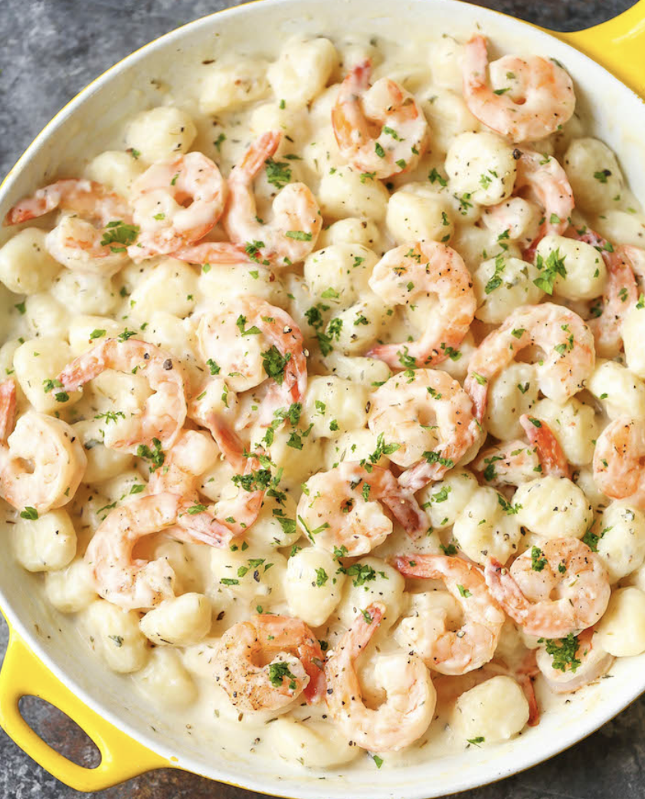

Shrimp Gnocchi

Description
Hearty, conmforting dish for the winter.
Ingredients
Steps
- In a large pot of boiling salted water, cook gnocchi according to package instructions; drain well.
- Melt butter in a large cast iron skillet over medium high heat. Add shrimp, salt and pepper, to taste.
Cook, stirring occasionally, until pink, about 2-3 minutes; set aside.
- To make the garlic parmesan cream sauce, melt butter in the skillet over medium heat. Add garlic, and cook,
stirring frequently, until fragrant, about 1-2 minutes. Whisk in flour until lightly browned, about 1 minute.
- Gradually whisk in chicken broth, thyme and basil. Cook, whisking constantly, until incorporated, about 1-2 minutes.
Stir in half and half and Parmesan until slightly thickened, about 1-2 minutes. If the mixture is too thick, add more
half and half as needed; season with salt and pepper, to taste.
- Stir in shrimp and gnocchi, and gently toss to combine. Serve immediately, garnished with parsley, if desired.